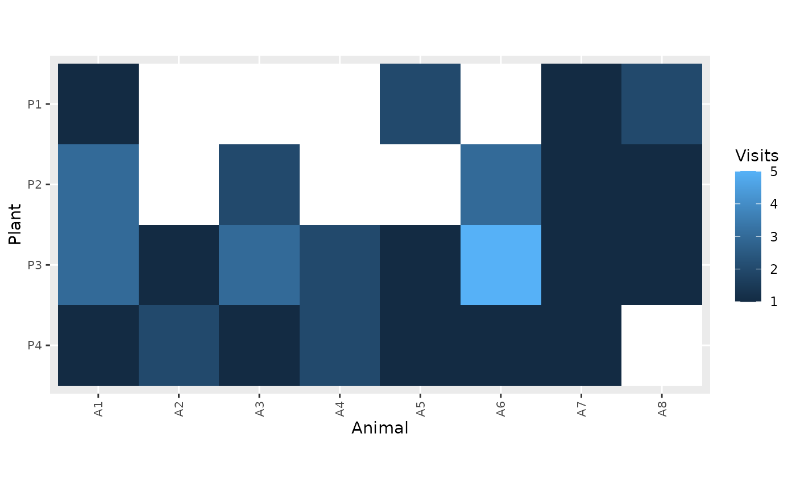

Plot bipartite interaction web as a heatmap
Usage
plot_web_heatmap(
df,
plant.var = "Plant",
animal.var = "Animal",
int.var = "Visits",
binarize = FALSE,
sort = TRUE,
zero.na = TRUE,
na.colour = "white"
)Arguments
- df
A data frame with interaction presence or frequency data
- plant.var
character. Name of the column representing plants.
- animal.var
character. Name of the column representing animals.
- int.var
character. Name of the column representing interaction presence or frequency.
- binarize
Logical. Discretize int.var into two categories? (Default is FALSE).
- sort
Logical. If TRUE, sort rows and columns by prevalence to show nestedness.
- zero.na
Logical. Show zeros as NA?
- na.colour
Colour to be used for NA.
Examples
data(web)
plot_web_heatmap(web)
plot_web_heatmap(web, zero.na = FALSE)
plot_web_heatmap(web, sort = FALSE)

plot_web_heatmap(web, binarize = TRUE)